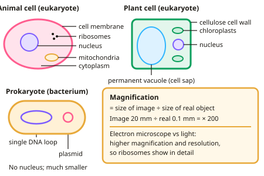

GCSE Biology · Topic 1
Cell biology
Welcome to Cell biology, the starting point for everything else in GCSE Biology. Every living thing is made of cells, so this is where the story begins.
We will look inside animal, plant and bacterial cells, see how cells specialise, divide and move substances in and out, and learn the two required practicals you need for the exam.
By the end you should be able to name every part of a cell, explain what it does, and handle the calculations that examiners love, like magnification and percentage change in mass.
- 8 subtopics
- 352 questions
- Free: 1.1 notes and 10 questions
In this topic
- 1.1Cell structure and microscopyFree below · 62 questions
- 1.2Cell specialisation and differentiationOpen in Full Marks · 31 questions
- 1.3Cell division and stem cellsOpen in Full Marks · 60 questions
- 1.4Transport in cellsOpen in Full Marks · 58 questions
- 1.5Surface area to volume ratio and exchange surfacesOpen in Full Marks · 26 questions
- 1.6Required/core practical: Using a light microscope to observe, draw and measure cellsOpen in Full Marks · 63 questions
- 1.7Required/core practical: Osmosis in plant tissue (potato cylinders)Open in Full Marks · 24 questions
- 1.8Growth: cell division, differentiation, elongation and percentile chartsOpen in Full Marks · 28 questions
1.1 · Free notes
Cell structure and microscopy

Key points
- Eukaryotic cells (animal and plant) have a nucleus. Prokaryotic cells (bacteria) are smaller, have no nucleus, and their DNA is a single loop, sometimes with extra rings called plasmids.
- Animal cells have a nucleus, cytoplasm, cell membrane, mitochondria and ribosomes.
- Plant cells also have a cellulose cell wall, chloroplasts and a permanent vacuole filled with cell sap.
- Magnification = size of image ÷ size of real object.
- Electron microscopes have much higher magnification and resolution than light microscopes, so they show sub-cellular structures such as ribosomes in detail.
In more detail
- Jobs of the parts: nucleus = holds the genetic material and controls the cell; cytoplasm = where most chemical reactions happen; cell membrane = controls what enters and leaves; mitochondria = aerobic respiration; ribosomes = protein synthesis.
- Sizes to know: a typical animal cell is about 10–30 µm across, a bacterium about 1–2 µm and a ribosome about 20–30 nm. 1 mm = 1000 µm and 1 µm = 1000 nm.
- Standard form: tiny sizes are written as powers of ten, e.g. 0.000 002 m = 2 × 10⁻⁶ m. Put image size and real size into the same unit before using magnification = image ÷ real.
- Resolution vs magnification: resolution is the smallest distance at which two points can still be seen as separate. Magnifying beyond the resolution only gives a bigger, blurrier image, which is why electron microscopes were needed to see ribosomes.
Practice
Cell structure and microscopy: 10 questions
Pick an answer to check it, or open the answer for the explanation.
1. Which structure is found in plant cells but not animal cells?
- Nucleus
- Cell membrane
- Chloroplast
- Mitochondria
Show answer
C: Chloroplast. Chloroplasts absorb light for photosynthesis; animal cells don't have them.
2. Where is the genetic material found in a bacterial cell?
- In a nucleus
- As a single DNA loop and plasmids in the cytoplasm
- In mitochondria
- In the cell wall
Show answer
B: As a single DNA loop and plasmids in the cytoplasm. Prokaryotes have no nucleus.
3. What is the function of ribosomes?
- Respiration
- Protein synthesis
- Photosynthesis
- Controlling the cell
Show answer
B: Protein synthesis. Ribosomes join amino acids to make proteins.
4. An image is 5 mm long and the real object is 0.05 mm. What is the magnification?
- × 10
- × 50
- × 100
- × 250
Show answer
C: × 100. 5 ÷ 0.05 = 100.
5. Why can electron microscopes show ribosomes when light microscopes cannot?
- They use colour
- They have higher resolution
- They are cheaper
- They use live cells
Show answer
B: They have higher resolution. Higher resolution distinguishes two points that are very close together.
6. What is the function of the cell membrane?
- Controls what enters and leaves the cell
- Produces proteins
- Contains genetic material
- Site of respiration
Show answer
A: Controls what enters and leaves the cell. It is partially permeable, controlling movement of substances.
7. A specimen is 0.02 mm and its image is 4 mm. What is the magnification?
- 20
- 100
- 200
- 400
Show answer
C: 200. Magnification = image size ÷ real size = 4 ÷ 0.02 = 200.
8. Which sub-cellular structure is the site of aerobic respiration in an animal cell?
- Cell membrane
- Ribosome
- Mitochondrion
- Nucleus
Show answer
C: Mitochondrion. Mitochondria contain the enzymes for aerobic respiration, which releases energy. Ribosomes make proteins and the nucleus holds the DNA.
9. What are plasmids?
- Protein-making structures in the cytoplasm
- Sacs of cell sap in plant cells
- Chloroplasts found in bacteria
- Small extra rings of DNA in bacterial cells
Show answer
D: Small extra rings of DNA in bacterial cells. Plasmids are small extra rings of DNA found in bacteria, in addition to the main single loop of DNA. Ribosomes make proteins.
10. A cell image is 12 mm long at a magnification of ×400. What is the real length of the cell?
- 33 mm
- 4800 mm
- 0.3 mm
- 0.03 mm
Show answer
D: 0.03 mm. Real size = image size ÷ magnification = 12 ÷ 400 = 0.03 mm. Multiplying instead of dividing gives 4800 mm, which is wrong.
Keep going in Full Marks
Full Marks has 62 questions on Cell structure and microscopy (52 more than here), set out in practice levels. You also get notes and 3D models for all 8 subtopics of Cell biology, plus games, timed exams and past papers.
On your exam board
- AQATopic 1: Cell biology
- OCR ATopic B1: Cell level systems, Topic B2: Scaling up
- OCR BTopic B4: Using food and controlling growth, Topic B5: The human body – staying alive
- EdexcelTopic 1: Key concepts in biology, Topic 2: Cells and control, Topic 8: Exchange and transport in animals
- CambridgeTopic 2: Organisation of the organism, Topic 3: Movement into and out of cells, Topic 17: Inheritance